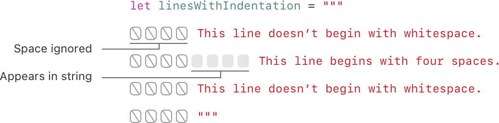
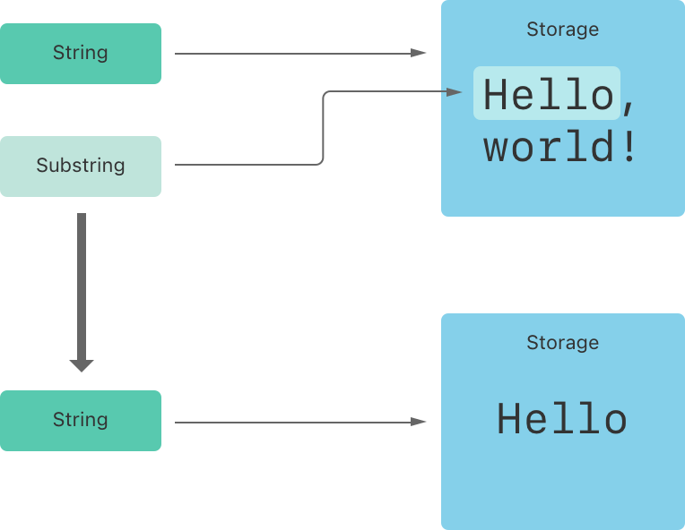
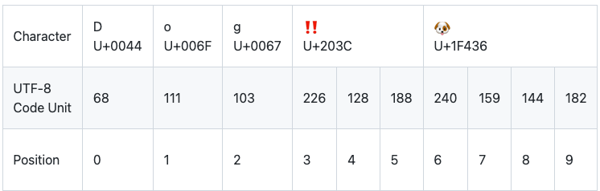
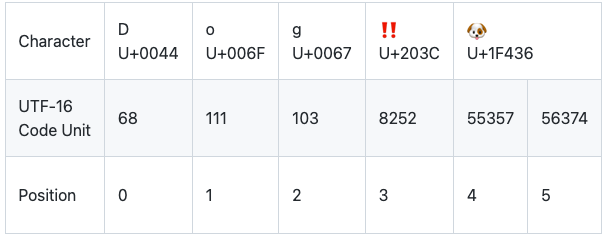
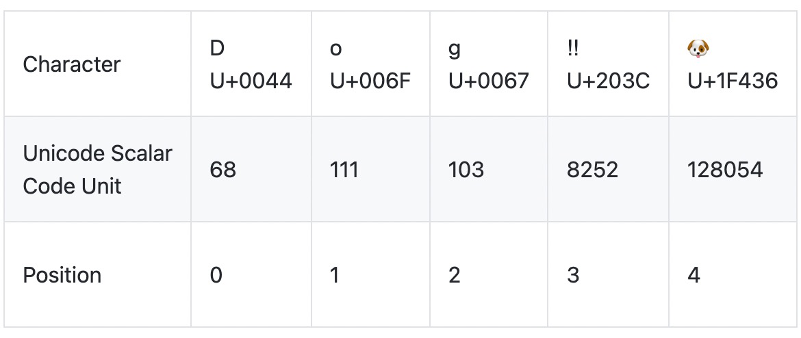

字符串是一系列字符的集合，例如 "hello, world"，"albatross"。Swift 的字符串通过 String 类型来表示。而 String 内容的访问方式有多种，例如以 Character 值的集合。
Swift 的 String 和 Character 类型提供了一种快速且兼容 Unicode 的方式来处理代码中的文本内容。创建和操作字符串的语法与 C 语言中字符串操作相似，轻量并且易读。通过 + 符号就可以非常简单的实现两个字符串的拼接操作。与 Swift 中其他值一样，能否更改字符串的值，取决于其被定义为常量还是变量。你可以在已有字符串中插入常量、变量、字面量和表达式从而形成更长的字符串，这一过程也被称为字符串插值。尤其是在为显示、存储和打印创建自定义字符串值时，字符串插值操作尤其有用。
尽管语法简易，但 Swift 中的 String 类型的实现却很快速和现代化。每一个字符串都是由编码无关的 Unicode 字符组成，并支持访问字符的多种 Unicode 表示形式。
注意
Swift 的
String类型与 FoundationNSString类进行了无缝桥接。Foundation 还对String进行扩展使其可以访问NSString类型中定义的方法。这意味着调用那些NSString的方法，你无需进行任何类型转换。更多关于在 Foundation 和 Cocoa 中使用
String的信息请查看 Bridging Between String and NSString。
你可以在代码里使用一段预定义的字符串值作为字符串字面量。字符串字面量是由一对双引号包裹着的具有固定顺序的字符集。
字符串字面量可以用于为常量和变量提供初始值：
xxxxxxxxxxlet someString = "Some string literal value"注意，Swift 之所以推断 someString 常量为字符串类型，是因为它使用了字面量方式进行初始化。
如果你需要一个字符串是跨越多行的，那就使用多行字符串字面量 — 由一对三个双引号包裹着的具有固定顺序的文本字符集：
xlet quotation = """The White Rabbit put on his spectacles. "Where shall I begin,please your Majesty?" he asked.
"Begin at the beginning," the King said gravely, "and go ontill you come to the end; then stop.""""一个多行字符串字面量包含了所有的在开启和关闭引号（"""）中的行。这个字符从开启引号（"""）之后的第一行开始，到关闭引号（"""）之前为止。这就意味着字符串开启引号之后（"""）或者结束引号（"""）之前都没有换行符号。（译者：下面两个字符串其实是一样的，虽然第二个使用了多行字符串的形式）
xxxxxxxxxxlet singleLineString = "These are the same."let multilineString = """These are the same."""如果你的代码中，多行字符串字面量包含换行符的话，则多行字符串字面量中也会包含换行符。如果你想换行，以便加强代码的可读性，但是你又不想在你的多行字符串字面量中出现换行符的话，你可以用在行尾写一个反斜杠（\）作为续行符。
xxxxxxxxxxlet softWrappedQuotation = """The White Rabbit put on his spectacles. "Where shall I begin, \please your Majesty?" he asked.
"Begin at the beginning," the King said gravely, "and go on \till you come to the end; then stop.""""为了让一个多行字符串字面量开始和结束于换行符，请将换行写在第一行和最后一行，例如：
xxxxxxxxxxlet lineBreaks = """
This string starts with a line break.It also ends with a line break.
"""一个多行字符串字面量能够缩进来匹配周围的代码。关闭引号（"""）之前的空白字符串告诉 Swift 编译器其他各行多少空白字符串需要忽略。然而，如果你在某行的前面写的空白字符串超出了关闭引号（"""）之前的空白字符串，则超出部分将被包含在多行字符串字面量中。

在上面的例子中，尽管整个多行字符串字面量都是缩进的（源代码缩进），第一行和最后一行没有以空白字符串开始（实际的变量值）。中间一行的缩进用空白字符串（源代码缩进）比关闭引号（"""）之前的空白字符串多，所以，它的行首将有 4 个空格。
字符串字面量可以包含以下特殊字符：
\0(空字符)、\\(反斜线)、\t(水平制表符)、\n(换行符)、\r(回车符)、\"(双引号)、\'(单引号)。\u{n}(u 为小写)，其中 n 为任意一到八位十六进制数且可用的 Unicode 位码。下面的代码为各种特殊字符的使用示例。
wiseWords 常量包含了两个双引号。
dollarSign、blackHeart 和 sparklingHeart 常量演示了三种不同格式的 Unicode 标量：
xxxxxxxxxxlet wiseWords = "\"Imagination is more important than knowledge\" - Einstein"// "Imagination is more important than knowledge" - Einsteinlet dollarSign = "\u{24}" // $，Unicode 标量 U+0024let blackHeart = "\u{2665}" // ♥，Unicode 标量 U+2665let sparklingHeart = "\u{1F496}" // 💖，Unicode 标量 U+1F496由于多行字符串字面量使用了三个双引号，而不是一个，所以你可以在多行字符串字面量里直接使用双引号（"）而不必加上转义符（\）。要在多行字符串字面量中使用 """ 的话，就需要使用至少一个转义符（\）：
xxxxxxxxxxlet threeDoubleQuotes = """Escaping the first quote \"""Escaping all three quotes \"\"\""""您可以将字符串文字放在扩展分隔符中，这样字符串中的特殊字符将会被直接包含而非转义后的效果。将字符串放在引号（"）中并用数字符号（#）括起来。例如，打印字符串文字 #"Line 1 \nLine 2"# 会打印换行符转义序列（\n）而不是给文字换行。
如果需要字符串文字中字符的特殊效果，请匹配转义字符（\）后面添加与起始位置个数相匹配的 # 符。 例如，如果您的字符串是 #"Line 1 \nLine 2"# 并且您想要换行，则可以使用 #"Line 1 \#nLine 2"# 来代替。 同样，###"Line1 \###nLine2"### 也可以实现换行效果。
扩展分隔符创建的字符串文字也可以是多行字符串文字。 您可以使用扩展分隔符在多行字符串中包含文本 """，覆盖原有的结束文字的默认行为。例如：
xxxxxxxxxxlet threeMoreDoubleQuotationMarks = #"""Here are three more double quotes: """"""#要创建一个空字符串作为初始值，可以将空的字符串字面量赋值给变量，也可以初始化一个新的 String 实例：
xxxxxxxxxxvar emptyString = "" // 空字符串字面量var anotherEmptyString = String() // 初始化方法// 两个字符串均为空并等价。你可以通过检查 Bool 类型的 isEmpty 属性来判断该字符串是否为空：
xxxxxxxxxxif emptyString.isEmpty { print("Nothing to see here")}// 打印输出：“Nothing to see here”你可以通过将一个特定字符串分配给一个变量来对其进行修改，或者分配给一个常量来保证其不会被修改：
xxxxxxxxxxvar variableString = "Horse"variableString += " and carriage"// variableString 现在为 "Horse and carriage"
let constantString = "Highlander"constantString += " and another Highlander"// 这会报告一个编译错误（compile-time error） - 常量字符串不可以被修改。注意
在 Objective-C 和 Cocoa 中，需要通过选择两个不同的类（
NSString和NSMutableString）来指定字符串是否可以被修改。
在 Swift 中 String 类型是值类型。如果你创建了一个新的字符串，那么当其进行常量、变量赋值操作，或在函数/方法中传递时，会进行值拷贝。在前述任一情况下，都会对已有字符串值创建新副本，并对该新副本而非原始字符串进行传递或赋值操作。值类型在 结构体和枚举是值类型 中进行了详细描述。
Swift 默认拷贝字符串的行为保证了在函数/方法向你传递的字符串所属权属于你，无论该值来自于哪里。你可以确信传递的字符串不会被修改，除非你自己去修改它。
在实际编译时，Swift 编译器会优化字符串的使用，使实际的复制只发生在绝对必要的情况下，这意味着你将字符串作为值类型的同时可以获得极高的性能。
你可通过 for-in 循环来遍历字符串，获取字符串中每一个字符的值：
xxxxxxxxxxfor character in "Dog!🐶" { print(character)}// D// o// g// !// 🐶for-in 循环在 For 循环 中进行了详细描述。
另外，通过标明一个 Character 类型并用字符字面量进行赋值，可以建立一个独立的字符常量或变量：
xxxxxxxxxxlet exclamationMark: Character = "!"字符串可以通过传递一个值类型为 Character 的数组作为自变量来初始化：
xxxxxxxxxxlet catCharacters: [Character] = ["C", "a", "t", "!", "🐱"]let catString = String(catCharacters)print(catString)// 打印输出：“Cat!🐱”字符串可以通过加法运算符（+）相加在一起（或称“连接”）创建一个新的字符串：
xxxxxxxxxxlet string1 = "hello"let string2 = " there"var welcome = string1 + string2// welcome 现在等于 "hello there"你也可以通过加法赋值运算符（+=）将一个字符串添加到一个已经存在字符串变量上：
xxxxxxxxxxvar instruction = "look over"instruction += string2// instruction 现在等于 "look over there"你可以用 append() 方法将一个字符附加到一个字符串变量的尾部：
xxxxxxxxxxlet exclamationMark: Character = "!"welcome.append(exclamationMark)// welcome 现在等于 "hello there!"注意
你不能将一个字符串或者字符添加到一个已经存在的字符变量上，因为字符变量只能包含一个字符。
如果你需要使用多行字符串字面量来拼接字符串，并且你需要字符串每一行都以换行符结尾，包括最后一行：
xxxxxxxxxxlet badStart = """onetwo"""let end = """three"""print(badStart + end)// 打印两行:// one// twothree
let goodStart = """onetwo
"""print(goodStart + end)// 打印三行:// one// two// three上面的代码，把 badStart 和 end 拼接起来的字符串非我们想要的结果。因为 badStart 最后一行没有换行符，它与 end 的第一行结合到了一起。相反的，goodStart 的每一行都以换行符结尾，所以它与 end 拼接的字符串总共有三行，正如我们期望的那样。
字符串插值是一种构建新字符串的方式，可以在其中包含常量、变量、字面量和表达式。字符串字面量和多行字符串字面量都可以使用字符串插值。你插入的字符串字面量的每一项都在以反斜线为前缀的圆括号中：
xxxxxxxxxxlet multiplier = 3let message = "\(multiplier) times 2.5 is \(Double(multiplier) * 2.5)"// message 是 "3 times 2.5 is 7.5"在上面的例子中，multiplier 作为 \(multiplier) 被插入到一个字符串常量量中。当创建字符串执行插值计算时此占位符会被替换为 multiplier 实际的值。
multiplier 的值也作为字符串中后面表达式的一部分。该表达式计算 Double(multiplier) * 2.5 的值并将结果（7.5）插入到字符串中。在这个例子中，表达式写为 \(Double(multiplier) * 2.5) 并包含在字符串字面量中。
你可以使用扩展字符串分隔符创建字符串，来包含不想作为字符串插值处理的字符。例如：
xxxxxxxxxxprint(#"Write an interpolated string in Swift using \(multiplier)."#)// 打印 "Write an interpolated string in Swift using \(multiplier)."如果要在使用扩展字符串分隔符的字符串中使用字符串插值，需要在反斜杠后面添加与开头和结尾数量相同扩展字符串分隔符。例如：
xxxxxxxxxxprint(#"6 times 7 is \#(6 * 7)."#)// 打印 "6 times 7 is 42."注意
插值字符串中写在括号中的表达式不能包含非转义反斜杠（
\），并且不能包含回车或换行符。不过，插值字符串可以包含其他字面量。
Unicode是一个用于在不同书写系统中对文本进行编码、表示和处理的国际标准。它使你可以用标准格式表示来自任意语言几乎所有的字符，并能够对文本文件或网页这样的外部资源中的字符进行读写操作。Swift 的 String 和 Character 类型是完全兼容 Unicode 标准的。
Swift 的 String 类型是基于 Unicode 标量 建立的。Unicode 标量是对应字符或者修饰符的唯一的 21 位数字，例如 U+0061 表示小写的拉丁字母（LATIN SMALL LETTER A）（"a"），U+1F425 表示小鸡表情（FRONT-FACING BABY CHICK）（"🐥"）。
请注意，并非所有 21 位 Unicode 标量值都分配给字符，某些标量被保留用于将来分配或用于 UTF-16 编码。已分配的标量值通常也有一个名称，例如上面示例中的 LATIN SMALL LETTER A 和 FRONT-FACING BABY CHICK。
每一个 Swift 的 Character 类型代表一个可扩展的字形群。而一个可扩展的字形群构成了人类可读的单个字符，它由一个或多个（当组合时） Unicode 标量的序列组成。
举个例子，字母 é 可以用单一的 Unicode 标量 é(LATIN SMALL LETTER E WITH ACUTE, 或者 U+00E9)来表示。然而一个标准的字母 e(LATIN SMALL LETTER E 或者 U+0065) 加上一个急促重音（COMBINING ACTUE ACCENT）的标量（U+0301），这样一对标量就表示了同样的字母 é。
这个急促重音的标量形象的将 e 转换成了 é。
在这两种情况中，字母 é 代表了一个单一的 Swift 的 Character 值，同时代表了一个可扩展的字形群。在第一种情况，这个字形群包含一个单一标量；而在第二种情况，它是包含两个标量的字形群：
xxxxxxxxxxlet eAcute: Character = "\u{E9}" // élet combinedEAcute: Character = "\u{65}\u{301}" // e 后面加上 ́// eAcute 是 é, combinedEAcute 是 é可扩展的字形集是一个将许多复杂的脚本字符表示为单个字符值的灵活方式。例如，来自朝鲜语字母表的韩语音节能表示为组合或分解的有序排列。在 Swift 都会表示为同一个单一的 Character 值：
xxxxxxxxxxlet precomposed: Character = "\u{D55C}" // 한let decomposed: Character = "\u{1112}\u{1161}\u{11AB}" // ᄒ, ᅡ, ᆫ// precomposed 是 한, decomposed 是 한可拓展的字符群集可以使包围记号（例如 COMBINING ENCLOSING CIRCLE 或者 U+20DD）的标量包围其他 Unicode 标量，作为一个单一的 Character 值：
xxxxxxxxxxlet enclosedEAcute: Character = "\u{E9}\u{20DD}"// enclosedEAcute 是 é⃝地域性指示符号的 Unicode 标量可以组合成一个单一的 Character 值，例如 REGIONAL INDICATOR SYMBOL LETTER U(U+1F1FA)和 REGIONAL INDICATOR SYMBOL LETTER S(U+1F1F8)：
xxxxxxxxxxlet regionalIndicatorForUS: Character = "\u{1F1FA}\u{1F1F8}"// regionalIndicatorForUS 是 🇺🇸如果想要获得一个字符串中 Character 值的数量，可以使用 count 属性：
xxxxxxxxxxlet unusualMenagerie = "Koala 🐨, Snail 🐌, Penguin 🐧, Dromedary 🐪"print("unusualMenagerie has \(unusualMenagerie.count) characters")// 打印输出“unusualMenagerie has 40 characters”注意在 Swift 中，使用可拓展的字符群集作为 Character 值来连接或改变字符串时，并不一定会更改字符串的字符数量。
例如，如果你用四个字符的单词 cafe 初始化一个新的字符串，然后添加一个 COMBINING ACTUE ACCENT(U+0301)作为字符串的结尾。最终这个字符串的字符数量仍然是 4，因为第四个字符是 é，而不是 e：
xxxxxxxxxxvar word = "cafe"print("the number of characters in \(word) is \(word.count)")// 打印输出“the number of characters in cafe is 4”
word += "\u{301}" // 拼接一个重音，U+0301
print("the number of characters in \(word) is \(word.count)")// 打印输出“the number of characters in café is 4”注意
可扩展的字形群可以由多个 Unicode 标量组成。这意味着不同的字符以及相同字符的不同表示方式可能需要不同数量的内存空间来存储。所以 Swift 中的字符在一个字符串中并不一定占用相同的内存空间数量。因此在没有获取字符串的可扩展的字符群的范围时候，就不能计算出字符串的字符数量。如果你正在处理一个长字符串，需要注意
count属性必须遍历全部的 Unicode 标量，来确定字符串的字符数量。另外需要注意的是通过
count属性返回的字符数量并不总是与包含相同字符的NSString的length属性相同。NSString的length属性是利用 UTF-16 表示的十六位代码单元数字，而不是 Unicode 可扩展的字符群集。
你可以通过字符串的属性和方法来访问和修改它，当然也可以用下标语法完成。
每一个 String 值都有一个关联的索引（index）类型，String.Index，它对应着字符串中的每一个 Character 的位置。
前面提到，不同的字符可能会占用不同数量的内存空间，所以要知道 Character 的确定位置，就必须从 String 开头遍历每一个 Unicode 标量直到结尾。因此，Swift 的字符串不能用整数（integer）做索引。
使用 startIndex 属性可以获取一个 String 的第一个 Character 的索引。使用 endIndex 属性可以获取最后一个 Character 的后一个位置的索引。因此，endIndex 属性不能作为一个字符串的有效下标。如果 String 是空串，startIndex 和 endIndex 是相等的。
通过调用 String 的 index(before:) 或 index(after:) 方法，可以立即得到前面或后面的一个索引。你还可以通过调用 index(_:offsetBy:) 方法来获取对应偏移量的索引，这种方式可以避免多次调用 index(before:) 或 index(after:) 方法。
你可以使用下标语法来访问 String 特定索引的 Character。
xxxxxxxxxxlet greeting = "Guten Tag!"greeting[greeting.startIndex]// Ggreeting[greeting.index(before: greeting.endIndex)]// !greeting[greeting.index(after: greeting.startIndex)]// ulet index = greeting.index(greeting.startIndex, offsetBy: 7)greeting[index]// a试图获取越界索引对应的 Character，将引发一个运行时错误。
xxxxxxxxxxgreeting[greeting.endIndex] // errorgreeting.index(after: greeting.endIndex) // error使用 indices 属性会创建一个包含全部索引的范围（Range），用来在一个字符串中访问单个字符。
xxxxxxxxxxfor index in greeting.indices { print("\(greeting[index]) ", terminator: "")}// 打印输出“G u t e n T a g ! ”注意
你可以使用
startIndex和endIndex属性或者index(before:)、index(after:)和index(_:offsetBy:)方法在任意一个确认的并遵循Collection协议的类型里面，如上文所示是使用在String中，你也可以使用在Array、Dictionary和Set中。
调用 insert(_:at:) 方法可以在一个字符串的指定索引插入一个字符，调用 insert(contentsOf:at:) 方法可以在一个字符串的指定索引插入一段字符串。
xxxxxxxxxxvar welcome = "hello"welcome.insert("!", at: welcome.endIndex)// welcome 变量现在等于 "hello!"
welcome.insert(contentsOf:" there", at: welcome.index(before: welcome.endIndex))// welcome 变量现在等于 "hello there!"调用 remove(at:) 方法可以在一个字符串的指定索引删除一个字符，调用 removeSubrange(_:) 方法可以在一个字符串的指定索引删除一个子字符串。
xxxxxxxxxxwelcome.remove(at: welcome.index(before: welcome.endIndex))// welcome 现在等于 "hello there"
let range = welcome.index(welcome.endIndex, offsetBy: -6)..<welcome.endIndexwelcome.removeSubrange(range)// welcome 现在等于 "hello"注意
你可以使用
insert(_:at:)、insert(contentsOf:at:)、remove(at:)和removeSubrange(_:)方法在任意一个确认的并遵循RangeReplaceableCollection协议的类型里面，如上文所示是使用在String中，你也可以使用在Array、Dictionary和Set中。
当你从字符串中获取一个子字符串 —— 例如，使用下标或者 prefix(_:) 之类的方法 —— 就可以得到一个 Substring 的实例，而非另外一个 String。Swift 里的 Substring 绝大部分函数都跟 String 一样，意味着你可以使用同样的方式去操作 Substring 和 String。然而，跟 String 不同的是，你只有在短时间内需要操作字符串时，才会使用 Substring。当你需要长时间保存结果时，就把 Substring 转化为 String 的实例：
xxxxxxxxxxlet greeting = "Hello, world!"let index = greeting.firstIndex(of: ",") ?? greeting.endIndexlet beginning = greeting[..<index]// beginning 的值为 "Hello"
// 把结果转化为 String 以便长期存储。let newString = String(beginning)就像 String，每一个 Substring 都会在内存里保存字符集。而 String 和 Substring 的区别在于性能优化上，Substring 可以重用原 String 的内存空间，或者另一个 Substring 的内存空间（String 也有同样的优化，但如果两个 String 共享内存的话，它们就会相等）。这一优化意味着你在修改 String 和 Substring 之前都不需要消耗性能去复制内存。就像前面说的那样，Substring 不适合长期存储 —— 因为它重用了原 String 的内存空间，原 String 的内存空间必须保留直到它的 Substring 不再被使用为止。
上面的例子，greeting 是一个 String，意味着它在内存里有一片空间保存字符集。而由于 beginning 是 greeting 的 Substring，它重用了 greeting 的内存空间。相反，newString 是一个 String —— 它是使用 Substring 创建的，拥有一片自己的内存空间。下面的图展示了他们之间的关系：

注意
String和Substring都遵循StringProtocol协议，这意味着操作字符串的函数使用StringProtocol会更加方便。你可以传入String或Substring去调用函数。
Swift 提供了三种方式来比较文本值：字符串字符相等、前缀相等和后缀相等。
字符串/字符可以用等于操作符（==）和不等于操作符（!=），详细描述在 比较运算符：
xxxxxxxxxxlet quotation = "We're a lot alike, you and I."let sameQuotation = "We're a lot alike, you and I."if quotation == sameQuotation { print("These two strings are considered equal")}// 打印输出“These two strings are considered equal”如果两个字符串（或者两个字符）的可扩展的字形群集是标准相等，那就认为它们是相等的。只要可扩展的字形群集有同样的语言意义和外观则认为它们标准相等，即使它们是由不同的 Unicode 标量构成。
例如，LATIN SMALL LETTER E WITH ACUTE(U+00E9)就是标准相等于 LATIN SMALL LETTER E(U+0065)后面加上 COMBINING ACUTE ACCENT(U+0301)。这两个字符群集都是表示字符 é 的有效方式，所以它们被认为是标准相等的：
xxxxxxxxxx// "Voulez-vous un café?" 使用 LATIN SMALL LETTER E WITH ACUTElet eAcuteQuestion = "Voulez-vous un caf\u{E9}?"
// "Voulez-vous un café?" 使用 LATIN SMALL LETTER E and COMBINING ACUTE ACCENTlet combinedEAcuteQuestion = "Voulez-vous un caf\u{65}\u{301}?"
if eAcuteQuestion == combinedEAcuteQuestion { print("These two strings are considered equal")}// 打印输出“These two strings are considered equal”相反，英语中的 LATIN CAPITAL LETTER A(U+0041，或者 A)不等于俄语中的 CYRILLIC CAPITAL LETTER A(U+0410，或者 A)。两个字符看着是一样的，但却有不同的语言意义：
xxxxxxxxxxlet latinCapitalLetterA: Character = "\u{41}"
let cyrillicCapitalLetterA: Character = "\u{0410}"
if latinCapitalLetterA != cyrillicCapitalLetterA { print("These two characters are not equivalent")}// 打印“These two characters are not equivalent”注意
在 Swift 中，字符串和字符并不区分地域（not locale-sensitive）。
通过调用字符串的 hasPrefix(_:)/hasSuffix(_:) 方法来检查字符串是否拥有特定前缀/后缀，两个方法均接收一个 String 类型的参数，并返回一个布尔值。
下面的例子以一个字符串数组表示莎士比亚话剧《罗密欧与朱丽叶》中前两场的场景位置：
xxxxxxxxxxlet romeoAndJuliet = [ "Act 1 Scene 1: Verona, A public place", "Act 1 Scene 2: Capulet's mansion", "Act 1 Scene 3: A room in Capulet's mansion", "Act 1 Scene 4: A street outside Capulet's mansion", "Act 1 Scene 5: The Great Hall in Capulet's mansion", "Act 2 Scene 1: Outside Capulet's mansion", "Act 2 Scene 2: Capulet's orchard", "Act 2 Scene 3: Outside Friar Lawrence's cell", "Act 2 Scene 4: A street in Verona", "Act 2 Scene 5: Capulet's mansion", "Act 2 Scene 6: Friar Lawrence's cell"]你可以调用 hasPrefix(_:) 方法来计算话剧中第一幕的场景数：
xxxxxxxxxxvar act1SceneCount = 0for scene in romeoAndJuliet { if scene.hasPrefix("Act 1 ") { act1SceneCount += 1 }}print("There are \(act1SceneCount) scenes in Act 1")// 打印输出“There are 5 scenes in Act 1”相似地，你可以用 hasSuffix(_:) 方法来计算发生在不同地方的场景数：
xxxxxxxxxxvar mansionCount = 0var cellCount = 0for scene in romeoAndJuliet { if scene.hasSuffix("Capulet's mansion") { mansionCount += 1 } else if scene.hasSuffix("Friar Lawrence's cell") { cellCount += 1 }}print("\(mansionCount) mansion scenes; \(cellCount) cell scenes")// 打印输出“6 mansion scenes; 2 cell scenes”注意
hasPrefix(_:)和hasSuffix(_:)方法都是在每个字符串中逐字符比较其可扩展的字符群集是否标准相等，详细描述在 字符串/字符相等。
当一个 Unicode 字符串被写进文本文件或者其他储存时，字符串中的 Unicode 标量会用 Unicode 定义的几种 编码格式（encoding forms）编码。每一个字符串中的小块编码都被称 代码单元（code units）。这些包括 UTF-8 编码格式（编码字符串为 8 位的代码单元）， UTF-16 编码格式（编码字符串位 16 位的代码单元），以及 UTF-32 编码格式（编码字符串 32 位的代码单元）。
Swift 提供了几种不同的方式来访问字符串的 Unicode 表示形式。你可以利用 for-in 来对字符串进行遍历，从而以 Unicode 可扩展的字符群集的方式访问每一个 Character 值。该过程在 使用字符 中进行了描述。
另外，能够以其他三种 Unicode 兼容的方式访问字符串的值：
utf8 属性进行访问）utf16 属性进行访问）unicodeScalars 属性进行访问）下面由 D,o,g,‼(DOUBLE EXCLAMATION MARK, Unicode 标量 U+203C)和 🐶(DOG FACE，Unicode 标量为 U+1F436)组成的字符串中的每一个字符代表着一种不同的表示：
xxxxxxxxxxlet dogString = "Dog‼🐶"你可以通过遍历 String 的 utf8 属性来访问它的 UTF-8 表示。其为 String.UTF8View 类型的属性，UTF8View 是无符号 8 位（UInt8）值的集合，每一个 UInt8 值都是一个字符的 UTF-8 表示：

xxxxxxxxxxfor codeUnit in dogString.utf8 { print("\(codeUnit) ", terminator: "")}print("")// 68 111 103 226 128 188 240 159 144 182上面的例子中，前三个 10 进制 codeUnit 值（68、111、103）代表了字符 D、o 和 g，它们的 UTF-8 表示与 ASCII 表示相同。接下来的三个 10 进制 codeUnit 值（226、128、188）是 DOUBLE EXCLAMATION MARK 的 3 字节 UTF-8 表示。最后的四个 codeUnit 值（240、159、144、182）是 DOG FACE 的 4 字节 UTF-8 表示。
你可以通过遍历 String 的 utf16 属性来访问它的 UTF-16 表示。其为 String.UTF16View 类型的属性，UTF16View 是无符号 16 位（UInt16）值的集合，每一个 UInt16 都是一个字符的 UTF-16 表示：

xxxxxxxxxxfor codeUnit in dogString.utf16 { print("\(codeUnit) ", terminator: "")}print("")// 68 111 103 8252 55357 56374同样，前三个 codeUnit 值（68、111、103）代表了字符 D、o 和 g，它们的 UTF-16 代码单元和 UTF-8 完全相同（因为这些 Unicode 标量表示 ASCII 字符）。
第四个 codeUnit 值（8252）是一个等于十六进制 203C 的的十进制值。这个代表了 DOUBLE EXCLAMATION MARK 字符的 Unicode 标量值 U+203C。这个字符在 UTF-16 中可以用一个代码单元表示。
第五和第六个 codeUnit 值（55357 和 56374）是 DOG FACE 字符的 UTF-16 表示。第一个值为 U+D83D(十进制值为 55357)，第二个值为 U+DC36(十进制值为 56374)。
你可以通过遍历 String 值的 unicodeScalars 属性来访问它的 Unicode 标量表示。其为 UnicodeScalarView 类型的属性，UnicodeScalarView 是 UnicodeScalar 类型的值的集合。
每一个 UnicodeScalar 拥有一个 value 属性，可以返回对应的 21 位数值，用 UInt32 来表示：

xxxxxxxxxxfor scalar in dogString.unicodeScalars { print("\(scalar.value) ", terminator: "")}print("")// 68 111 103 8252 128054前三个 UnicodeScalar 值（68、111、103）的 value 属性仍然代表字符 D、o 和 g。
第四个 codeUnit 值（8252）仍然是一个等于十六进制 203C 的十进制值。这个代表了 DOUBLE EXCLAMATION MARK 字符的 Unicode 标量 U+203C。
第五个 UnicodeScalar 值的 value 属性，128054，是一个十六进制 1F436 的十进制表示。其等同于 DOG FACE 的 Unicode 标量 U+1F436。
作为查询它们的 value 属性的一种替代方法，每个 UnicodeScalar 值也可以用来构建一个新的 String 值，比如在字符串插值中使用：
for scalar in dogString.unicodeScalars { print("\(scalar) ")}// D// o// g// ‼// 🐶